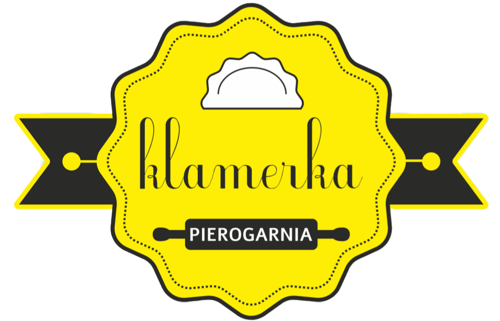
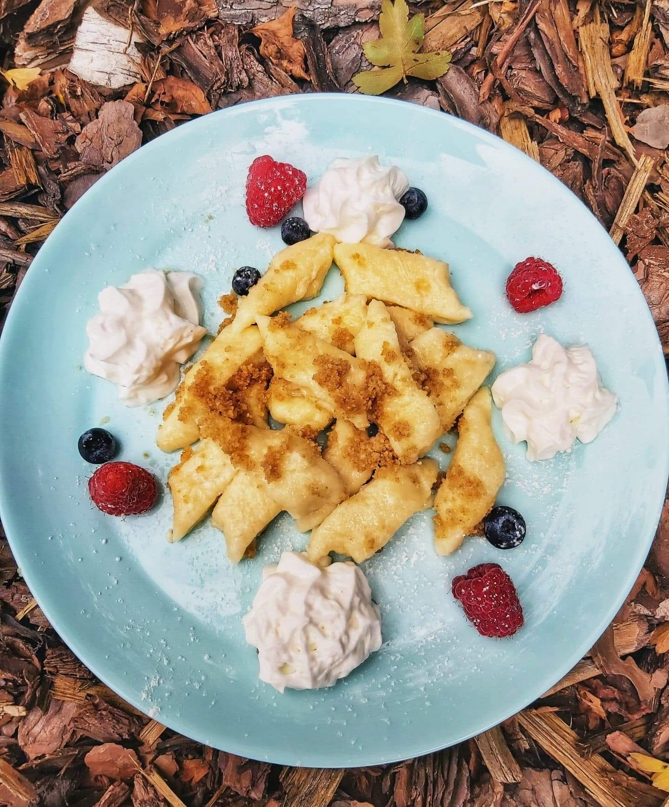
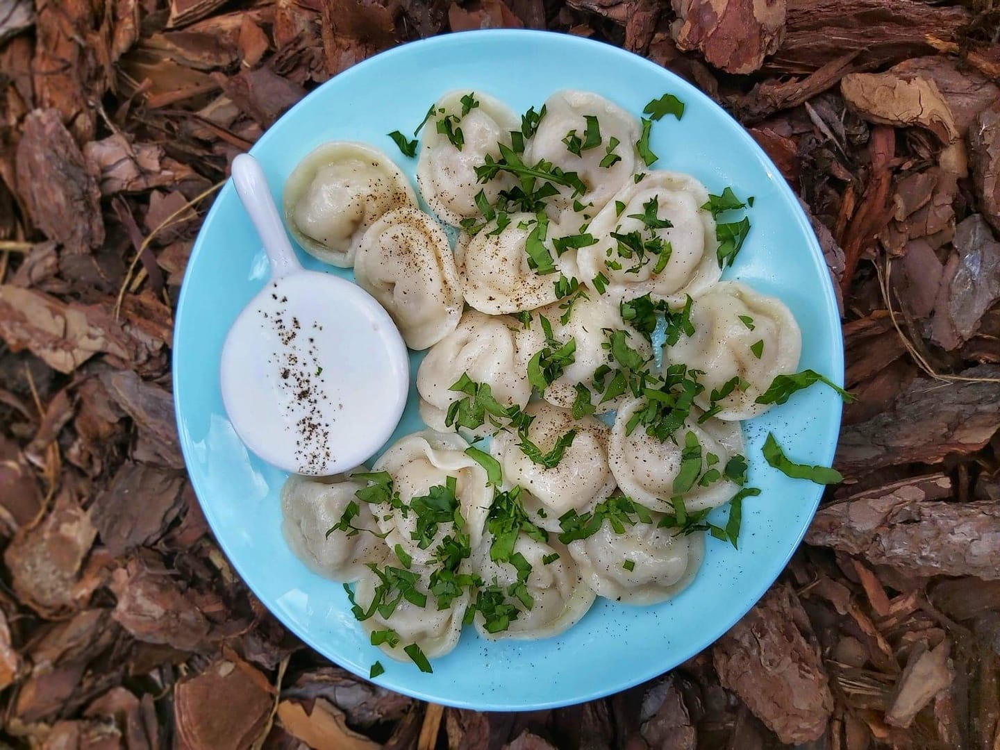
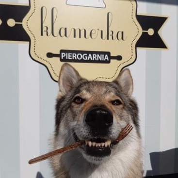

O nas
Nie jesteśmy tylko tymi, którym chce się lepić pierogi- my to po prostu kochamy!
Czekamy w Lusówku na tych, którzy są spragnieni domowych pierogów w klasycznym i nowoczesnym wydaniu.
Naszą specjalnością jest mięciutkie ciasto i farsze, których próżno szukać gdzie indziej!
Sprawdź na Facebooku, jakie serwujemy dzisiaj i zamów
nasze pierogi do domu, biura lub po prostu cupnij i zjedz
u nas!

INNE POZYCJE
W Klamerce lubimy pozytywnie zaskakiwać naszych klientów, dlatego nasze pozycję są niezwykle wyszukane i pozwalają na odkrywanie nowych połączeń smakowych o których mogłeś nie mieć pojęcia. Oprócz pierogów oferujemy również inne pozycje takie jak:

Szare kluchy

Leniwe kluseczki

Pielmieni

Zupa dnia
Kapusta i grzyby
W mięciutkim cieście znajdziecie grzyby leśne i kapustę kwaszoną
Śliwka i cynamon
W mięciutkim cieście znajdziecie smażone na maśle z cynamonem śliwki
Meksykańskie
W mięciutkim cieście kryje się mięso, fasola, kukurydza, pomidory i ser
Zobacz co nasi klienci mówią o nas
Przysmakuj naszą autentyczną pasję! Zanurz się w opiniach naszych kochanych klientów i poczuj prawdziwą satysfakcję smaku.
Zobacz co klienci mówią o nas - od pierwszego ugryzienia w nasze wyjątkowe pierogi po ostatni ciepły uśmiech po posiłku. Ale to nie tylko słowa - to historia naszej miłości do gotowania i Twojego zadowolenia.
Najlepsza pierogarnia na świecie. Od dzieciństwa takich nie jadłem. Coś niesamowitego. Mały przyjazny lokal. Można zabrać dziewczynę na smaczny kameralny obiad/kolację lub przyjechać z rodziną na wyborne pierogi, które pochwali każda babcia na świecie
- Łukasz B

Pyszne pierogi! Piękny wystrój lokalu w pastelowych kolorach. Przy wejściu od razu widać jak kucharze formują własnoręcznie pierogi. Pierogi są z różnym farszem i można wziąć mieszane, czyli z różnych smaków na jednym talerzu. Polecam!
- Agata W
Bardzo smaczne pierogi, ciekawe smaki farszu, duża dowolność w komponowaniu zestawu a do tego bardzo miła obsługa. Cenowo również bardzo przystępnie. Można zjeść na miejscu lub kupić na wynos. Polecam z czystym sumieniem!
- Igor C
Jesteśmy lokalem PET-FRIENDLY
U nas każdy futrzasty towarzysz jest równie mile widziany jak Ty. Wiemy, że nasi czworonożni przyjaciele to nieodzowna część naszych dni, dlatego stworzyliśmy przytulne otoczenie, w którym Ty i Twój pupilek możecie cieszyć się smakiem życia razem. W naszym lokalu pet-friendly nie musisz zostawiać swojego pupila w domu - zapraszamy Was oboje do wspólnego delektowania się wyjątkowymi pierogami i wspaniałą atmosferą.
Jesteśmy lokalem DOGFRIENDLY
Zapraszamy z psami!
U nas każdy futrzasty towarzysz jest równie mile widziany jak Ty.
Wiemy, że nasi
czworonożni przyjaciele
to nieodzowna część naszych dni, dlatego stworzyliśmy przytulne otoczenie, w którym Ty i Twój
pupilek możecie cieszyć się smakiem życia razem. W naszym lokalu pet-friendly nie musisz zostawiać swojego
pupila w domu - zapraszamy Was oboje do wspólnego delektowania się wyjątkowymi pierogami i wspaniałą atmosferą.

Kontakt
- Adres: Wiązowa 2/1.1
62-080 Lusówko - pierogarniaklamerka
- facebook.com/pierogarniaklamerka
- pierogarnia.klamerka@gmail.com
- 790 480 997
Godziny Otwarcia
-
Poniedziałek
10:00 - 16:00
-
Wtorek
10:00 - 16:00
-
Środa
10:00 - 16:00
-
Czwartek
10:00 - 16:00
-
Piatek
10:00 - 16:00